文件系统 API (2)：监控、快照、覆盖与任意数据结构
课程：2026 春季学期《操作系统原理》
讲师：蒋炎岩（jyy）
官方课程主页：https://jyywiki.cn/OS/2026/
官方讲义：https://jyywiki.cn/OS/2026/lect25.md
视频来源：Bilibili BV12gVs6SExQ
版权说明：课程讲义与幻灯片归蒋炎岩所有，采用 Creative Commons BY-NC 4.0 许可；本电子书是对课堂讲授的书面化重构，保留出处与许可说明。
导语：文件系统不只是增删改查
(参考时间: 00:00)
上一讲学习了文件系统的 CRUD API：
mkdir/rmdir；link/symlink/unlink；- 文件权限、xattr、ACL；
mount/umount。
这些都是一次修改一个对象的“一小步操作”。这一讲讨论更高级的问题：
文件系统作为一个 Abstract Data Type，还能提供哪些操作？
课程选择四类能力：
- 监控：文件改变时主动通知应用；
- 快照：保留并返回过去某个时间点的状态；
- 覆盖：把多个目录拼成一个虚拟目录；
- FUSE：在用户态实现任意文件系统。
flowchart LR
A["文件系统 CRUD"] --> B["监控"]
A --> C["快照"]
A --> D["覆盖 / Union"]
A --> E["FUSE 自定义文件系统"]
B --> F["高级 ADT 操作"]
C --> F
D --> F
E --> F
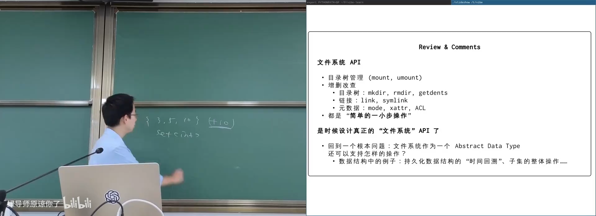
📷 文件系统是可定义高级操作的数据结构
回到原视频 (00:03:00)
1. 文件监控：从轮询到事件
1.1 用 CRUD 实现监控
(参考时间: 00:05)
Web Server 的 debug mode、IDE、文件管理器都需要知道：
哪个文件什么时候改变了？
只用 CRUD 也能实现：
diff \
<(stat -c '%n %y' **) \
<(sleep 2; date > a.txt; stat -c '%n %y' **)
流程是：
- 枚举所有文件；
- 记录修改时间；
- 等一段时间；
- 再枚举并比较。
flowchart TD
A["枚举目录"] --> B["读取 stat / mtime"]
B --> C["等待"]
C --> D["再次枚举"]
D --> E["对比前后快照"]
E --> F["找出改变的文件"]
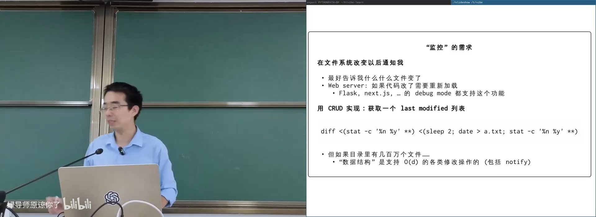
📷 轮询 stat 并做 diff 可以实现文件监控
回到原视频 (00:06:00)
1.2 轮询的扩展性问题
(参考时间: 00:08)
如果目录里有几百万文件，每次轮询都需要数百万次元数据查询。
即使文件系统缓存让单次查询变快，这种方案仍然浪费：
- CPU；
- 内存带宽；
- 文件系统锁；
- I/O。
真正需要的是由内核主动产生事件。
flowchart TD
A["Millions of Files"] --> B["Polling Every File"]
B --> C["Millions of stat Calls"]
C --> D["High Overhead"]
E["Kernel Event API"] --> F["Only Changed Files"]
F --> G["Low Overhead"]
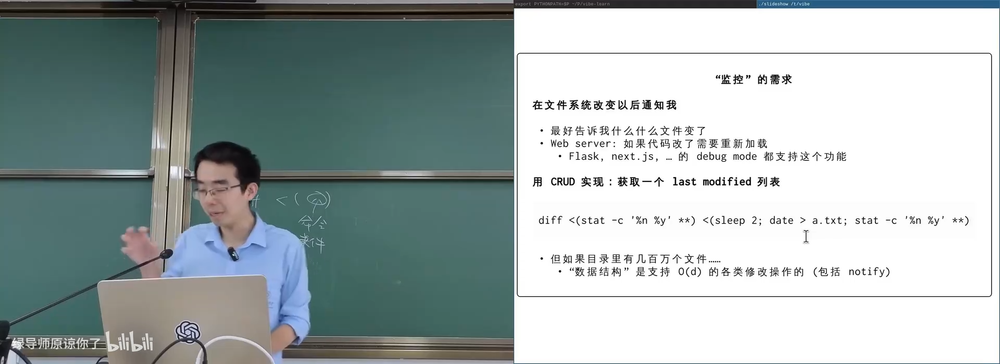
📷 百万文件上的轮询会造成巨大开销
回到原视频 (00:08:30)
1.3 inotify
(参考时间: 00:09)
Linux 提供 inotify：
int fd = inotify_init();
int wd = inotify_add_watch(
fd,
"/path/to/watch",
IN_CREATE | IN_MODIFY | IN_DELETE | IN_MOVE
);
struct inotify_event event;
read(fd, &event, sizeof(event));
特点：
inotify_init()返回文件描述符；- 可以与
select、poll、epoll一起使用； - 每个 watch 产生事件；
- 默认不递归监听子目录。
flowchart LR
A["inotify_init()"] --> B["Event fd"]
C["add_watch(path)"] --> D["Kernel Watch"]
D --> E["File Changed"]
E --> B
B --> F["read / epoll"]
F --> G["Application Event Handler"]
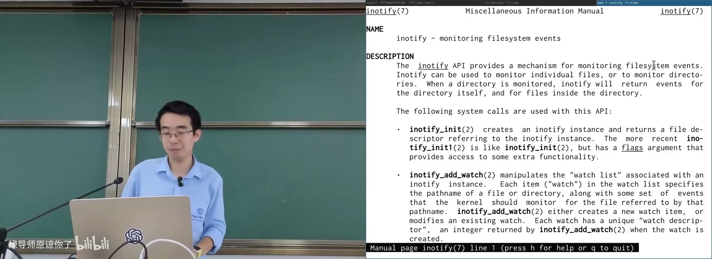
📷 inotify 用文件描述符向用户态发送文件事件
回到原视频 (00:09:30)
1.4 watchdog 实验
(参考时间: 00:11)
Python watchdog 封装了 inotify：
observer = Observer()
observer.schedule(event_handler, ".", recursive=True)
observer.start()
创建文件时，可以看到多类事件：
- 新文件
CREATE； - 新文件
MODIFY； - 父目录的
MODIFY。
flowchart TD
A["touch a.txt"] --> B["CREATE a.txt"]
A --> C["MODIFY a.txt"]
A --> D["Parent Directory MODIFY"]
B --> E["watchdog Event"]
C --> E
D --> E
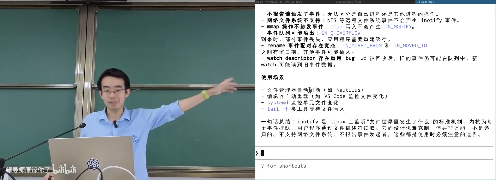
📷 watchdog 演示文件创建与父目录修改事件
回到原视频 (00:11:00)
1.5 修改时间只向一级目录传播
(参考时间: 00:12)
在深层目录中修改文件：
t/1/2/a.txt
会更新：
a.txt；2/的 mtime。
但不会继续更新：
1/；t/。
flowchart TD
A["Modify t/1/2/a.txt"] --> B["Update a.txt mtime"]
B --> C["Update 2/ mtime"]
C --> D["Stop"]
D --> E["1/ and t/ unchanged"]
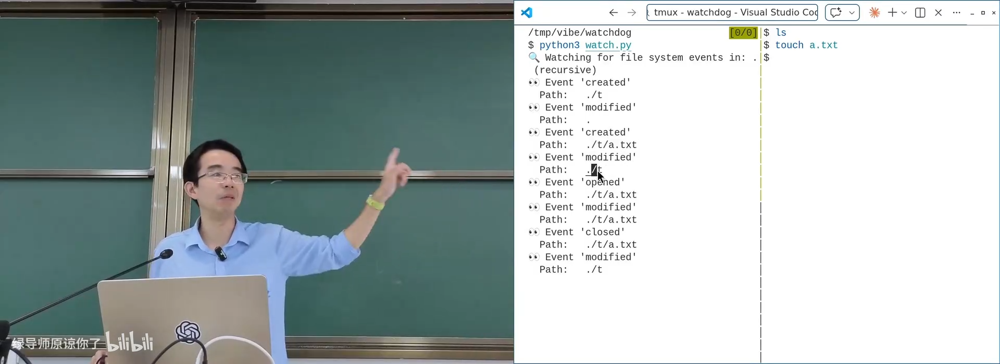
📷 文件修改只向上传播一级目录时间戳
回到原视频 (00:12:30)
2. 从监控到可编程内核探针
2.1 所有监控都在提取内核执行信息
(参考时间: 00:14)
课程列举多种观测工具：
strace：系统调用；ltrace：库函数；- inotify：文件系统事件；
- block trace：块设备 I/O；
- profiling：CPU 与缓存行为。
它们都希望回答同一类问题：
内核执行到某个位置时，发生了什么？
flowchart LR
A["Kernel Execution"] --> B["strace"]
A --> C["inotify"]
A --> D["Block Trace"]
A --> E["Profiler"]
B --> F["Observable Events"]
C --> F
D --> F
E --> F
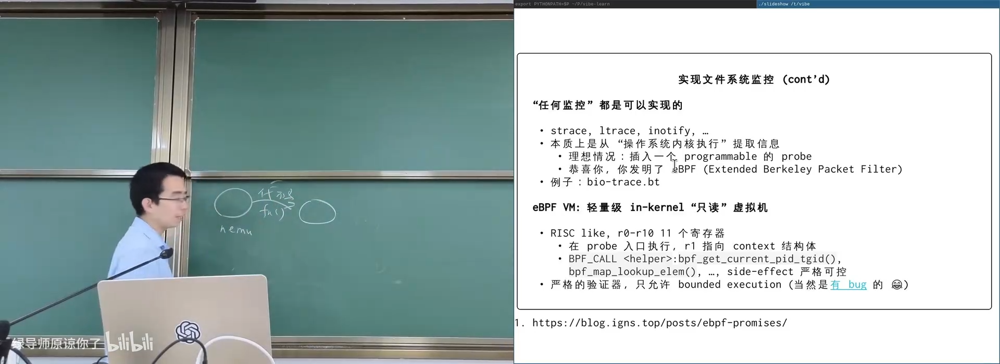
📷 不同监控工具都在从内核执行中提取事件
回到原视频 (00:15:00)
2.2 eBPF：可编程的只读内核虚拟机
(参考时间: 00:16)
如果允许用户上传一段小程序，并在内核 hook point 执行，就可以定制监控。
这就是 eBPF：
- RISC-like 指令集；
r0-r10共 11 个寄存器；r0为返回值；- probe 入口的
r1指向 context； - 可以调用受控 helper。
flowchart TD
A["User Program"] --> B["Compile to eBPF Bytecode"]
B --> C["BPF System Call"]
C --> D["Verifier"]
D --> E["In-kernel JIT"]
E --> F["Attach to Hook Point"]
F --> G["Collect Events"]
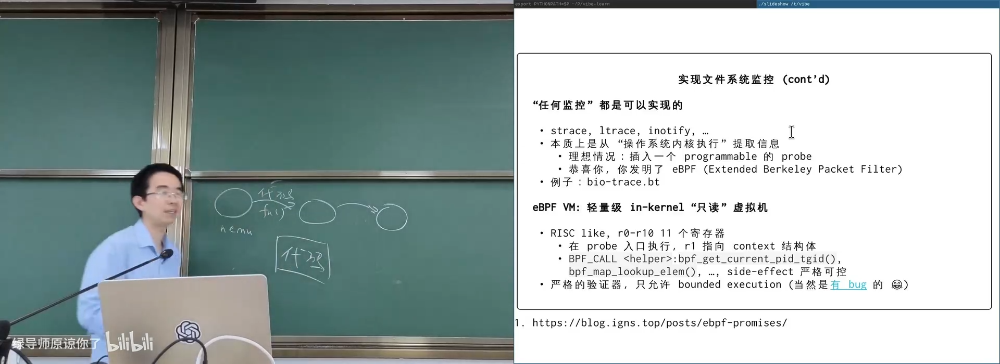
📷 eBPF 把可编程 probe 安全地附加到内核
回到原视频 (00:16:30)
2.3 为什么最初为网络而设计
(参考时间: 00:18)
网络设备每秒可能到达数百万包，不适合每次都陷入用户态再决定是否丢弃。
防火墙只做少量判断：
if source_ip in blocked_set:
drop_packet()
把这类逻辑放进内核，可以避免频繁上下文切换。
flowchart LR
A["Network Packet"] --> B["eBPF Hook"]
B --> C{"Allow？"}
C -- "是" --> D["Continue Stack"]
C -- "否" --> E["Drop"]
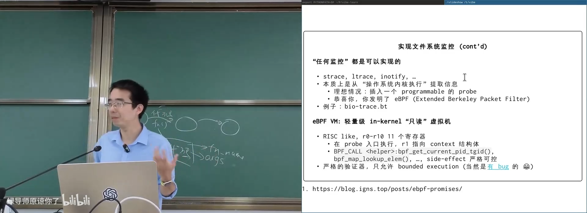
📷 eBPF 起源于高性能网络包过滤
回到原视频 (00:18:30)
2.4 Helper 与 Map
(参考时间: 00:20)
eBPF 程序不能随意读写任意内核内存，只能使用受控接口：
bpf_get_current_pid_tgid();
bpf_map_lookup_elem(map, key);
bpf_map_update_elem(map, key, value, flags);
需要计数器或历史记录时，使用内核提供的 BPF Map。
flowchart TD
A["eBPF Program"] --> B["Helper Call"]
B --> C["Current PID"]
B --> D["Map Lookup"]
B --> E["Timestamp"]
D --> F["BPF Map"]
F --> G["Userspace Reader"]
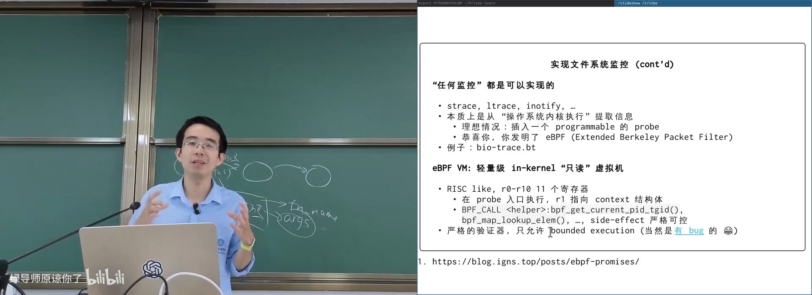
📷 eBPF helper 和 map 提供受控的内核数据访问
回到原视频 (00:20:30)
2.5 Verifier 与 bounded execution
(参考时间: 00:21)
eBPF 验证器要求：
- 程序不能无限循环；
- 访问范围必须有界；
- 类型与寄存器状态合法；
- 只能使用允许的 helper；
- 不能随意改内核数据。
但验证器与优化器本身也可能有 bug。课程提到生产环境中曾出现明确不应被删除的代码被错误优化掉。
flowchart TD
A["eBPF Bytecode"] --> B["Static Verifier"]
B --> C{"Bounded / Safe？"}
C -- "否" --> D["Reject"]
C -- "是" --> E["Optimizer / JIT"]
E --> F["Attach to Kernel"]
G["Verifier Optimizer Bug"] --> F
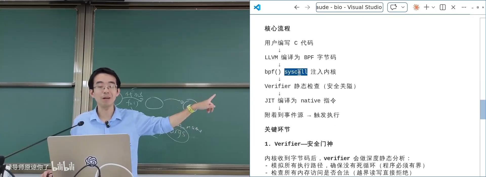
📷 严格验证器保证有限执行，但实现仍可能有 bug
回到原视频 (00:22:30)
2.6 从文件监控到任意内核观测
(参考时间: 00:23)
如果 hook 点足够多，就可以组合：
- 键盘与鼠标事件；
execve；- 文件系统事件；
- 网络事件；
- 块设备 I/O；
- 调度与进程状态。
这可以形成完整行为轨迹，也能用于学习工具与系统诊断。
flowchart LR
A["Keyboard / Mouse"] --> F["Unified Event Stream"]
B["execve"] --> F
C["Filesystem"] --> F
D["Network"] --> F
E["Block I/O"] --> F
F --> G["Reconstruct Activity"]
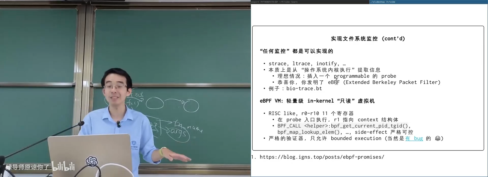
📷 多类 eBPF trace 可以重建系统行为轨迹
回到原视频 (00:23:30)
3. Spec Is All You Need
3.1 先写正确但不高效的实现
(参考时间: 00:26)
需求可以用一行高开销脚本表达：
diff <(stat ...) <(sleep 2; modify; stat ...)
但它的 Specification 很清楚：
当文件改变时，高效地告诉我改变了什么。
然后让 AI 搜索操作系统已有机制，收敛到 inotify、eBPF 或 fanotify。
flowchart TD
A["Functional Specification"] --> B["Naive Correct Implementation"]
B --> C["AI Explores OS Mechanisms"]
C --> D1["Polling"]
C --> D2["inotify"]
C --> D3["fanotify"]
C --> D4["eBPF"]
D2 --> E["Efficient Implementation"]
D3 --> E
D4 --> E
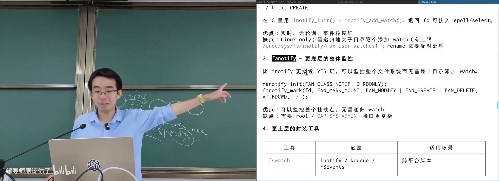
📷 先描述清楚要什么，再让系统选择高效机制
回到原视频 (00:27:30)
3.2 Just-in-Time Systems
(参考时间: 00:29)
课程引用 The time is here for just-in-time systems：
- 根据环境；
- 根据 workload；
- 根据系统性质；
- 从零合成专用系统。
flowchart LR
A["Specification"] --> B["Agent"]
C["Environment"] --> B
D["Workload"] --> B
E["Required Properties"] --> B
B --> F["Synthesize System"]
F --> G["Measure"]
G --> B
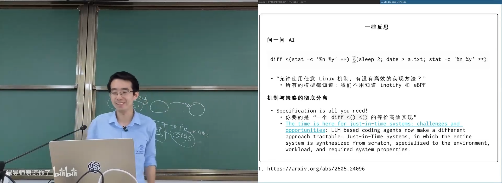
📷 Agent 可以根据规范、环境和负载合成专用系统
回到原视频 (00:29:30)
4. 从持久化数据结构到 Git
4.1 路径复制
(参考时间: 00:31)
回顾上一讲的核心：
Random read + append-only write = 任何持久化数据结构。
修改树中一个节点时：
- 复制从根到该节点的路径；
- 新节点指向旧树中的共享子树；
- 旧根保留旧版本；
- 新根代表新版本。
flowchart TD
A["Old Root"] --> B["Shared Subtree"]
C["New Root"] --> D["Copied Path"]
D --> E["New Node"]
D --> B
A --> F["Version 0"]
C --> G["Version 1"]
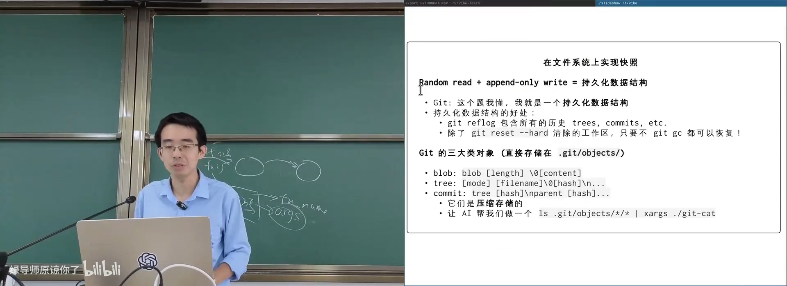
📷 路径复制同时保留新旧树版本
回到原视频 (00:31:30)
4.2 Git 是持久化对象图
(参考时间: 00:32)
Git 把自己的所有内容放在 .git/objects/：
- blob：文件内容；
- tree：目录结构、权限与文件名；
- commit：root tree、parent、作者和提交信息。
blob [length]\0[content]
tree:
100644 a.txt\0<blob-hash>
100755 script\0<blob-hash>
commit:
tree <hash>
parent <hash>
author ...
flowchart TD
A["Commit"] --> B["Root Tree"]
B --> C1["Blob a.txt"]
B --> C2["Subtree dir"]
C2 --> D1["Blob b.txt"]
C2 --> D2["Blob c.txt"]
A --> E["Parent Commit"]
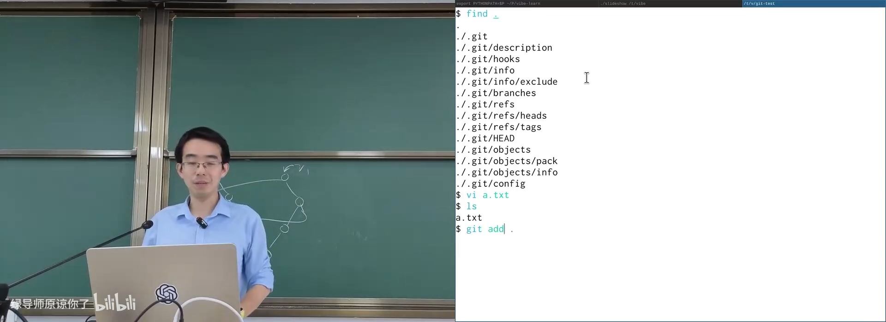
📷 Git 用 blob、tree、commit 组成内容寻址对象图
回到原视频 (00:34:00)
4.3 直接阅读 Git Object
(参考时间: 00:36)
对象采用压缩存储，但可以写工具解压：
find .git/objects -type f |
xargs ./git-cat
旧文件与新文件会同时存在：
hello
hello world
flowchart LR
A[".git/objects"] --> B["Compressed Blob 1"]
A --> C["Compressed Blob 2"]
B --> D["Old File Version"]
C --> E["New File Version"]
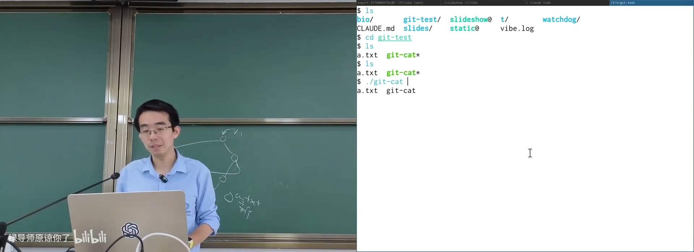
📷 Git 对象池同时保留同一文件的所有历史版本
回到原视频 (00:36:30)
4.4 refs 与 HEAD
(参考时间: 00:39)
分支是指向 commit 的文件：
.git/refs/heads/main → commit hash
HEAD 指向分支：
.git/HEAD → ref: refs/heads/main
因此 HEAD 是“指针的指针”。
flowchart LR
H["HEAD"] --> R["refs/heads/main"]
R --> C["Commit Object"]
C --> T["Tree Object"]
T --> B1["Blob"]
T --> B2["Blob"]
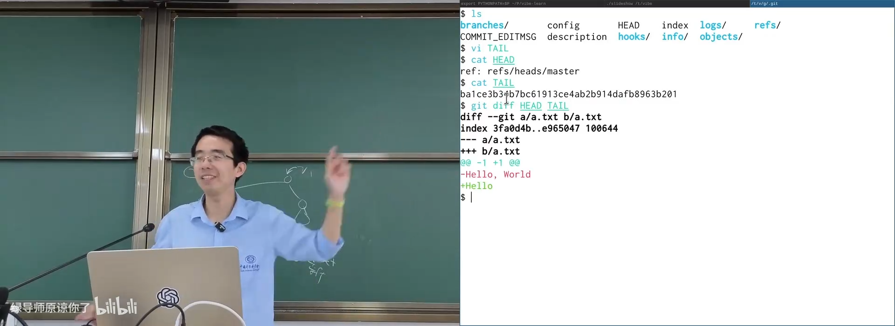
📷 HEAD 通过 ref 指向 commit
回到原视频 (00:39:30)
4.5 创建自定义 TAIL
(参考时间: 00:40)
可以手动创建一个引用：
.git/refs/tail → old commit hash
git diff HEAD tail
这再一次说明 Git 没有隐藏魔法，只是文件与指针。
flowchart TD
A["HEAD"] --> B["New Commit"]
C["TAIL"] --> D["Old Commit"]
B --> E["git diff"]
D --> E
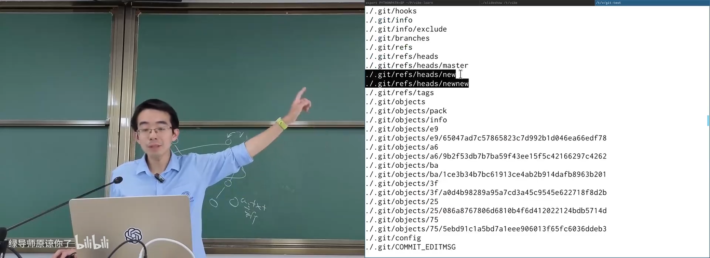
📷 自定义引用 TAIL 也能参与 Git diff
回到原视频 (00:40:30)
4.6 Stash 是带两个 parent 的 commit
(参考时间: 00:42)
Stash 不是特殊存储区，而是一串 commit：
stash commit
├── parent 1: HEAD
└── parent 2: previous stash
因此可以 push / pop，形成栈结构。
flowchart LR
H["HEAD Commit"] --> S1["Stash 1"]
S1 --> S2["Stash 2"]
S1 --> P2["Previous Stash Parent"]
S2 --> S1
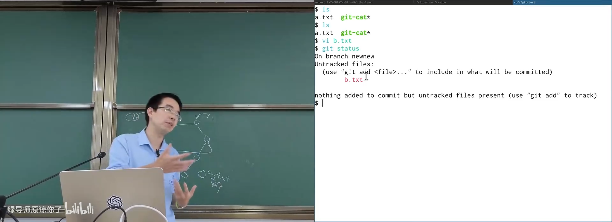
📷 Stash 用双亲 commit 串成栈
回到原视频 (00:42:30)
5. Merge、Cherry-pick 与 Rebase
5.1 Merge
(参考时间: 00:44)
两条历史：
Local: CA → A → B
Remote: CA → C → D
普通 merge 创建 E：两个 parent 分别指向 B 与 D。
flowchart TD
CA["Common Ancestor"] --> A
A --> B
CA --> C
C --> D
B --> E["Merge Commit"]
D --> E
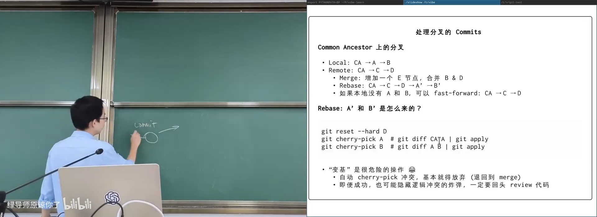
📷 Merge 创建具有两个 parent 的新提交
回到原视频 (00:45:30)
5.2 Fast-forward
(参考时间: 00:47)
如果本地没有 A、B，远端直接包含本地历史，就只需移动分支指针：
CA → C → D
flowchart LR
A["CA"] --> B["C"] --> C["D"]
D["D"] --> E["Local Branch Pointer"]
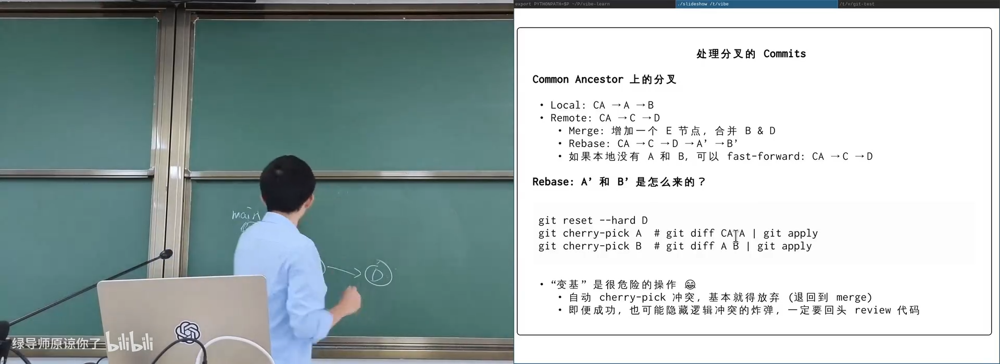
📷 Fast-forward 只移动分支指针
回到原视频 (00:47:30)
5.3 Cherry-pick
(参考时间: 00:48)
一个 commit 可以视为一个 diff：
diff = tree(A) → tree(B)
Cherry-pick 把该 diff 应用到另一条历史，生成新的 commit，而不是复制原 commit hash。
flowchart LR
A["Commit A"] --> B["Commit B"]
A --> D["diff A→B"]
B --> D
D --> C["Apply to Target Branch"]
C --> E["New Commit B'"]
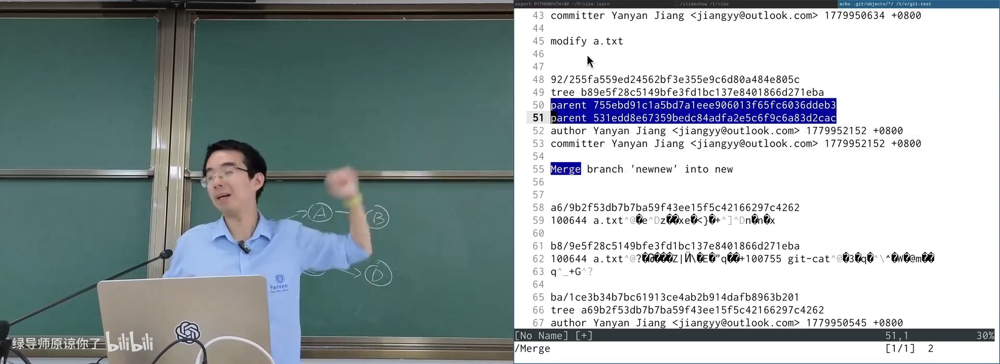
📷 Cherry-pick 抽取单次提交的补丁并重新应用
回到原视频 (00:48:30)
5.4 Rebase
(参考时间: 00:50)
Rebase：
- 切换到远端
C、D； - 把
CA→A的 diff 应用为新A'； - 把
A→B的 diff 应用为新B'； - 丢掉旧
A、B的引用。
flowchart LR
A["Local A → B"] --> D1["diff 1: CA→A"]
A --> D2["diff 2: A→B"]
C["Remote C → D"] --> R1["A'"]
D1 --> R1
R1 --> R2["B'"]
D2 --> R2
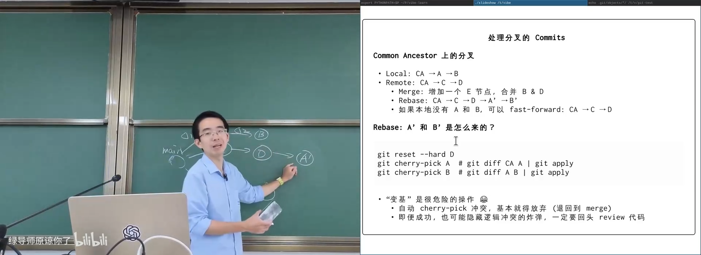
📷 Rebase 顺序重放本地提交的 diff
回到原视频 (00:50:30)
5.5 Rebase 的风险
(参考时间: 00:51)
Rebase 可能隐藏逻辑冲突：
- 文件层面没有冲突；
- 语义却已矛盾；
- 必须重新 review 每个重放后的 diff；
- 多处冲突时回退到 merge 往往更安全。
flowchart TD
A["Automatic Rebase"] --> B{"Text Conflict？"}
B -- "是" --> C["Painful Resolution"]
B -- "否" --> D["Rewrite Succeeded"]
D --> E{"Logical Conflict？"}
E -- "可能" --> F["Manual Review Required"]
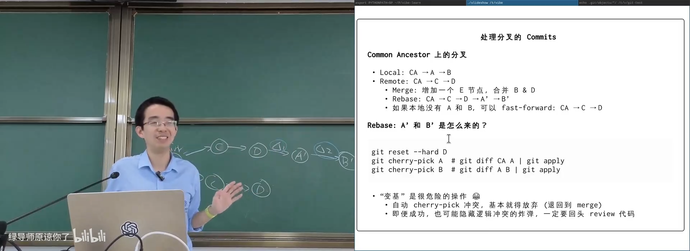
📷 自动 Rebase 成功仍可能隐藏语义冲突
回到原视频 (00:51:30)
6. Git Worktree：持久化结构带来的“免费复制”
6.1 Git 最初是单工作区模型
(参考时间: 00:53)
Git 类似早期 UNIX：
- 一个 worktree；
- 一个 HEAD；
- 线性提交；
- 需要临时切换时使用 stash。
频繁、多任务切换会造成 stash 地狱。
flowchart TD
A["Current Work"] --> B["stash"]
B --> C["Checkout Hotfix"]
C --> D["Work Halfway"]
D --> E["stash Again"]
E --> F["Stash Stack Grows"]
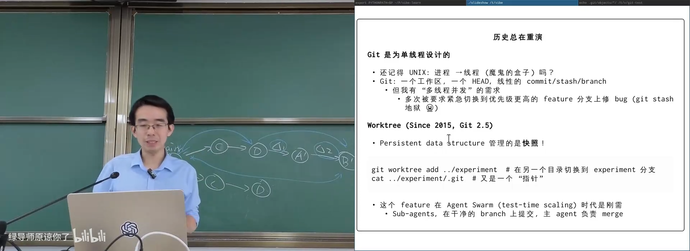
📷 多任务切换使单工作区 Git 很快遇到限制
回到原视频 (00:53:30)
6.2 Worktree
(参考时间: 00:55)
创建第二个工作目录：
git worktree add ../hotfix hotfix
新目录中的 .git 不是完整对象库，而是一个文本指针：
gitdir: /main/repo/.git/worktrees/hotfix
所有版本对象共享，只有工作区和引用不同。
flowchart LR
O["Shared .git/objects"] --> W1["Worktree main"]
O --> W2["Worktree hotfix"]
O --> W3["Worktree agent-1"]
W1 --> R1["HEAD 1"]
W2 --> R2["HEAD 2"]
W3 --> R3["HEAD 3"]
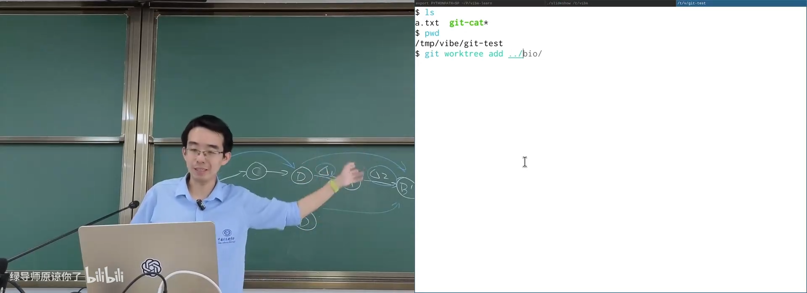
📷 Worktree 共享对象库，只复制指针和工作区
回到原视频 (00:56:30)
6.3 Agent Swarm 时代
(参考时间: 00:57)
多个 Agent 可以：
- 在独立 worktree 工作；
- 在干净分支上提交；
- 主 Agent 负责合并；
- 减少相互污染。
flowchart TD
M["Main Agent"] --> A1["Sub-agent Worktree 1"]
M --> A2["Sub-agent Worktree 2"]
M --> A3["Sub-agent Worktree 3"]
A1 --> R1["Branch 1"]
A2 --> R2["Branch 2"]
A3 --> R3["Branch 3"]
R1 --> M
R2 --> M
R3 --> M
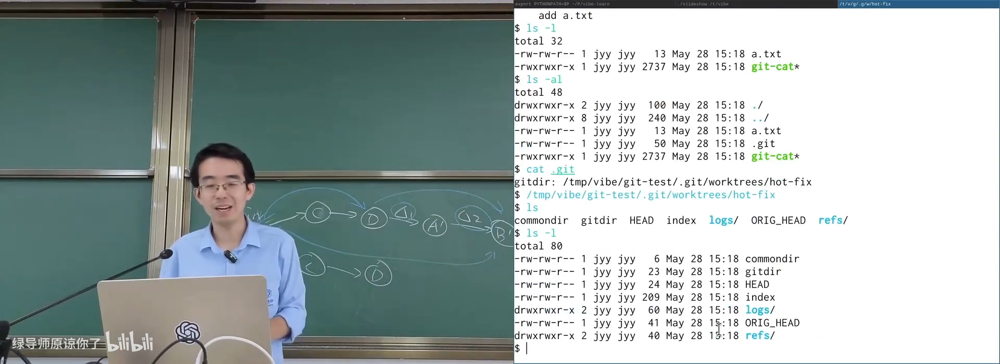
📷 Worktree 为多 Agent 并行开发提供隔离环境
回到原视频 (00:57:30)
7. 文件系统级快照
7.1 Btrfs Copy-on-Write
(参考时间: 00:58)
Btrfs 使用 B-tree 和 copy-on-write：
- 修改数据不覆盖旧块；
- 新根指向新数据；
- 旧根仍指向旧数据；
- 创建快照只需记录旧根。
flowchart TD
A["Current Root"] --> B["B-tree"]
C["Snapshot Root"] --> B
B --> D1["Shared Old Blocks"]
A --> E["New Blocks"]
E --> F["Updated B-tree"]
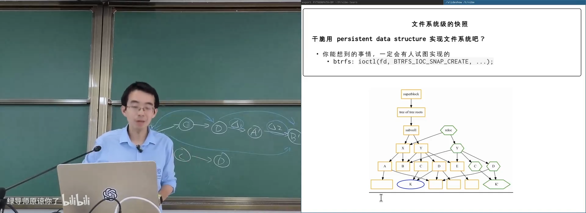
📷 Btrfs 通过 CoW 树共享旧块实现快照
回到原视频 (00:59:30)
7.2 Snapshot ioctl
(参考时间: 00:59)
ioctl(fd, BTRFS_IOC_SNAP_CREATE, &args);
创建快照本质上只是记录一个 root 指针。
flowchart LR
A["Open Filesystem FD"] --> B["BTRFS_IOC_SNAP_CREATE"]
B --> C["Record Current Root"]
C --> D["Snapshot Visible"]
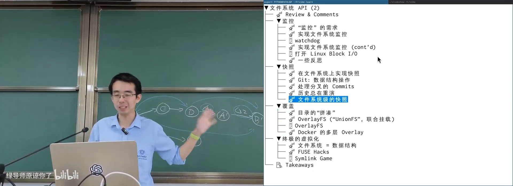
📷 文件系统通过 ioctl 创建瞬时快照
回到原视频 (01:00:30)
8. OverlayFS：把目录叠加起来
8.1 Union 的基本语义
(参考时间: 01:01)
OverlayFS 把：
- 一个 upper；
- 一个或多个 lower；
合并成一个虚拟目录。
查找规则：
- 先看 upper；
- 没有再看 lower；
- 写入只修改 upper；
- lower 保持不变。
flowchart TD
A["lookup merged/a.txt"] --> B{"upper/a.txt exists？"}
B -- "是" --> C["Use upper version"]
B -- "否" --> D{"lower/a.txt exists？"}
D -- "是" --> E["Use lower version"]
D -- "否" --> F["Not Found"]
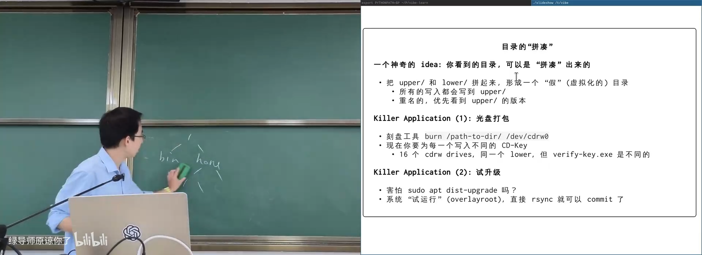
📷 Overlay 查找优先使用 upper 文件
回到原视频 (01:01:30)
8.2 Killer App：并行刻盘与不同 CD Key
(参考时间: 01:03)
同一份 600 MB 内容需要写入 16 张盘，每张只多一个不同 CD Key：
15 × lower 共享 600MB
16 × upper 各放 CDKey.exe
flowchart LR
L["Shared Lower 600MB"] --> M1["Merged CD 1"]
L --> M2["Merged CD 2"]
L --> M3["Merged CD 16"]
U1["Upper CDKey 1"] --> M1
U2["Upper CDKey 2"] --> M2
U3["Upper CDKey 16"] --> M3
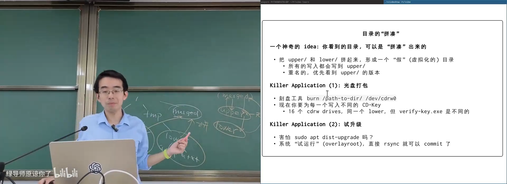
📷 Overlay 让多张光盘共享同一份只读内容
回到原视频 (01:03:30)
8.3 Killer App：试升级
(参考时间: 01:05)
把系统根作为 lower，在另一个磁盘创建空 upper，执行危险升级：
lower = old rootfs
upper = new disk
merged = /
升级失败时丢弃 upper；成功时再同步到真实系统。
flowchart TD
A["Old Root as Lower"] --> C["Merged Root"]
B["Empty Upper on New Disk"] --> C
C --> D["Run apt dist-upgrade"]
D --> E{"Success？"}
E -- "否" --> F["Discard Upper"]
E -- "是" --> G["Commit Changes"]
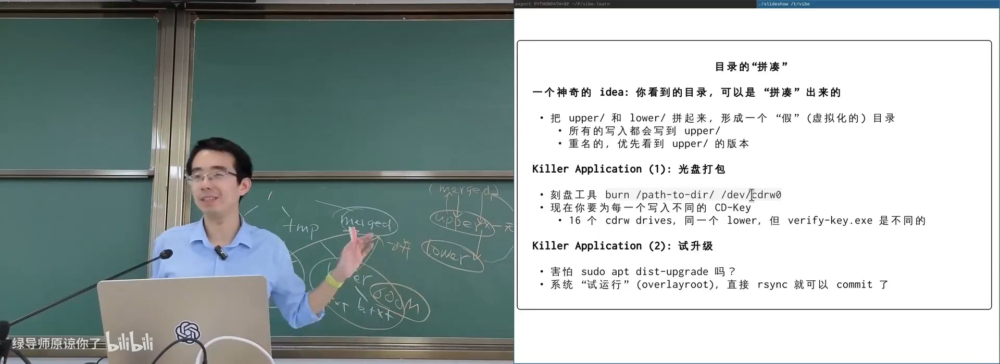
📷 Overlayroot 让危险升级变成可回滚实验
回到原视频 (01:05:30)
8.4 Mount OverlayFS
(参考时间: 01:08)
mount -t overlay overlay \
-o lowerdir=L1:L2:...,upperdir=U,workdir=W \
merged/
规则：
- 多个 lower；
- 只允许一个 upper；
- workdir 是内部临时空间；
- workdir 必须为空。
flowchart LR
L1["Lower L1"] --> M["Merged"]
L2["Lower L2"] --> M
U["Upper U"] --> M
W["Workdir W"] --> M
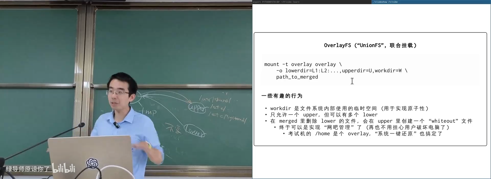
📷 OverlayFS 支持多层 lower 和单一 upper
回到原视频 (01:08:30)
8.5 Whiteout
(参考时间: 01:10)
删除 lower 中的文件不能在 lower 中改数据，因此 upper 会创建 whiteout：
lower/lower.txt
↓ delete in merged
upper/.wh.lower.txt
merged 中文件消失，但 lower 保持不变。
flowchart TD
A["Delete merged/lower.txt"] --> B["Create Whiteout in Upper"]
B --> C["Merged Hides File"]
D["Lower File"] --> E["Still Unchanged"]
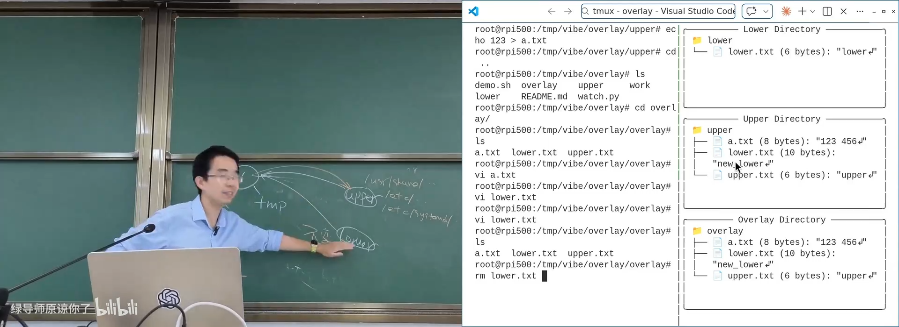
📷 Whiteout 用 upper 中的特殊节点隐藏 lower 文件
回到原视频 (01:10:30)
8.6 考试机与网吧管理
(参考时间: 01:11)
系统根和 home 作为 lower，每场考试或每个用户分配不同 upper：
- 用户看不到上一场的数据；
- 重启或换 upper 即恢复干净环境；
- 管理员仍保留真实 upper 用于审计。
flowchart TD
S["System Lower"] --> M1["Morning Exam"]
S --> M2["Afternoon Exam"]
U1["Morning Upper"] --> M1
U2["Afternoon Upper"] --> M2
M1 --> A["Admin Audit"]
M2 --> A
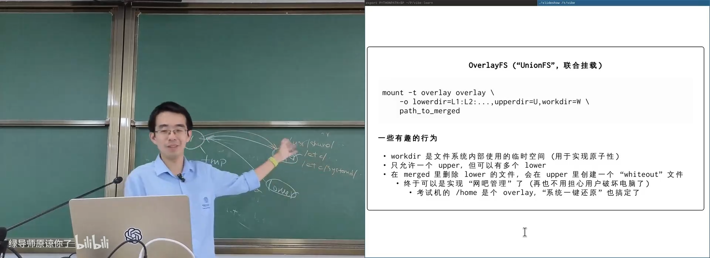
📷 Overlay 可以隔离并审计每场考试的用户修改
回到原视频 (01:11:30)
9. Docker Layer
(参考时间: 01:12)
Dockerfile：
FROM ubuntu:22.04
RUN apt-get update
RUN apt-get install -y software-a
RUN apt-get install -y software-b
每个 RUN：
- 把之前的镜像作为 lower；
- 创建空 upper；
- 在容器内执行命令；
- 把 upper 提交成新 layer；
- 新 layer 成为下一次构建的 lower。
flowchart TD
A["Base Image Layer"] --> B["RUN apt update"]
B --> C["Update Layer"]
C --> D["RUN install A"]
D --> E["Software A Layer"]
E --> F["RUN install B"]
F --> G["Software B Layer"]
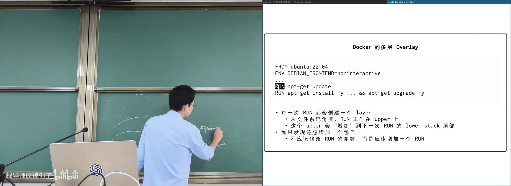
📷 每个 Docker RUN 生成一个不可变文件系统层
回到原视频 (01:13:30)
如果忘记安装软件，正确方式是在末尾增加新的 RUN，而不是修改早期 RUN，因为后者会让后续所有 layer cache 失效。
flowchart LR
A["Existing Layers"] --> B["New RUN"]
B --> C["Additional Layer"]
C --> D["Updated Image"]
E["Edit Old RUN"] --> F["Invalidate All Later Layers"]
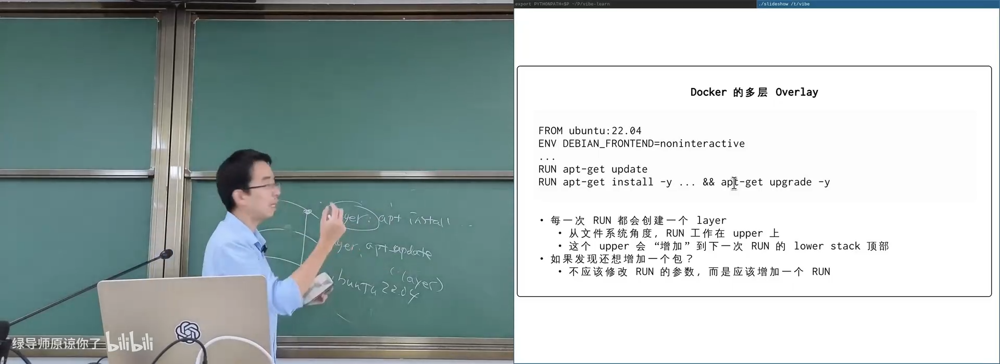
📷 追加新 layer 比修改历史 layer 更符合容器模型
回到原视频 (01:15:30)
10. FUSE：在用户态实现文件系统
10.1 内核把操作转发给用户态
(参考时间: 01:16)
FUSE 提供 struct fuse_operations：
struct fuse_operations {
int (*getattr)(const char *, struct stat *);
int (*readdir)(...);
int (*open)(const char *, struct fuse_file_info *);
int (*read)(...);
int (*write)(...);
int (*setxattr)(...);
// ...
};
内核收到文件操作后，把请求转发到 FUSE daemon，daemon 可以返回任意计算得到的结果。
flowchart LR
A["Application"] --> B["VFS"]
B --> C["FUSE Kernel Module"]
C --> D["FUSE Daemon"]
D --> E["Custom Logic / Database / Network"]
E --> D
D --> C
C --> A
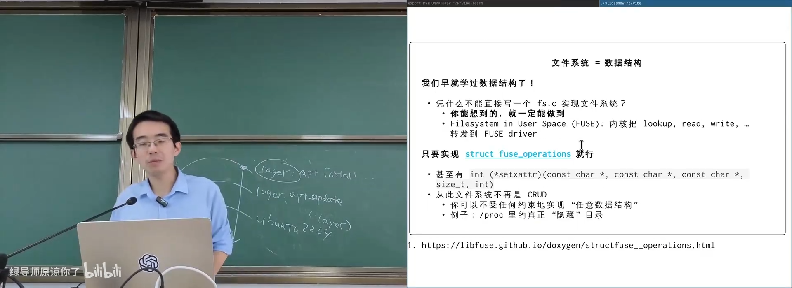
📷 FUSE 把 lookup/read/write 转发给用户态实现
回到原视频 (01:16:30)
10.2 GGFS：Galgame 文件系统
(参考时间: 01:18)
课程实现了一个 GGFS：
- 目录和文件由程序即时生成；
- 读取文件触发自定义逻辑；
- 写入任意文件驱动剧情状态；
- 不要求背后有真实的磁盘文件。
flowchart TD
A["Read GGFS File"] --> B["Generate Synthetic Data"]
C["Write GGFS File"] --> D["Update Game State"]
D --> E["Rebuild Virtual Directory"]
E --> F["Files Change"]
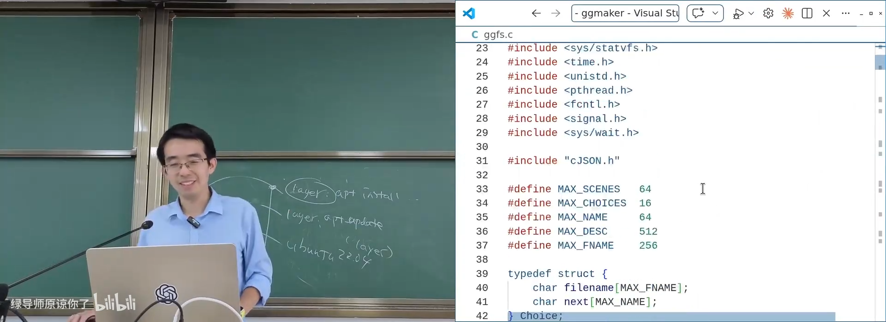
📷 GGFS 用文件系统接口驱动一个 Galgame
回到原视频 (01:18:30)
10.3 用 FUSE 映射任意后端
(参考时间: 01:20)
示例：
sshfs：远程 SSH 目录；aitfs：远程 Git 仓库；dbfs：数据库作为文件系统后端；ffs：JSON 或其他数据源变成文件系统；- GGFS：游戏状态变成文件系统。
flowchart LR
A["SSH"] --> F["FUSE"]
B["Git"] --> F
C["Database"] --> F
D["JSON"] --> F
E["Custom State Machine"] --> F
F --> G["Ordinary Files and Directories"]
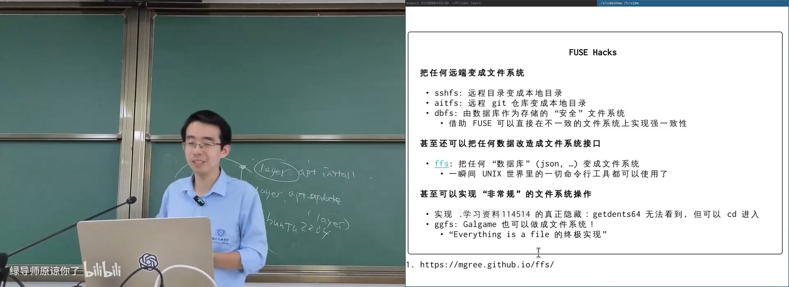
📷 FUSE 可以把网络、数据库或任意状态映射成文件
回到原视频 (01:20:30)
10.4 非常规文件系统行为
(参考时间: 01:21)
FUSE 可以违背普通文件系统的直觉：
getdents64看不到某个目录；- 知道名字的程序仍可
cd进入； - 读取返回随机或生成数据；
- 写入任何文件都能改变内部状态；
- 文件系统可以是一个状态机。
flowchart TD
A["Virtual Directory"] --> B{"List Directory?"}
B -- "是" --> C["Hide Secret Entry"]
B -- "否" --> D{"Know Exact Name？"}
D -- "否" --> E["Not Found"]
D -- "是" --> F["Return Virtual Node"]
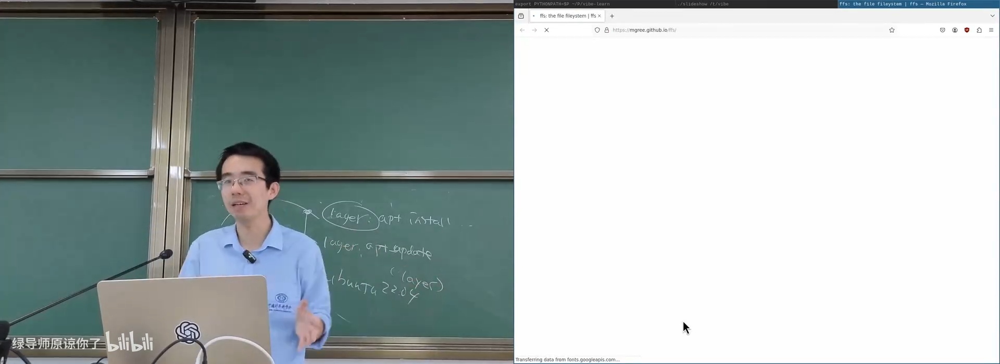
📷 FUSE 可以自定义目录可见性和状态转换
回到原视频 (01:21:30)
10.5 Symlink Game
(参考时间: 01:21)
符号链接也可以构造任意有向图：
a → b
b → c
c → a
操作系统会按照路径解析规则逐段解析，这再次说明“文件系统机制”可以被当作创作空间。
flowchart LR
A["Room A"] --> B["Room B"]
B --> C["Room C"]
C --> D["Ending"]
C --> A
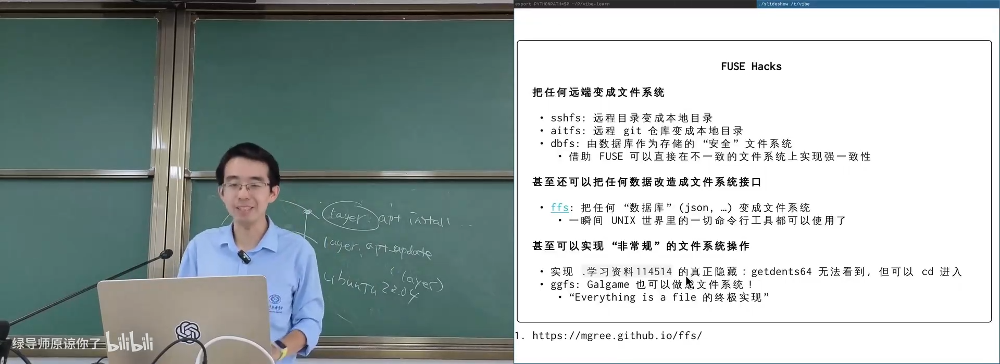
📷 符号链接可以构造任意状态机和图结构
回到原视频 (01:22:00)
11. 总结：All You Need Is a Data Structure
如果摆脱“文件系统只能是块设备上的固定结构”这一固有印象，把它看作 ADT，就可以自由设计操作：
- inotify 提供事件监控；
- eBPF 提供可编程内核探针；
- Git 用持久化 object graph 实现历史与分支；
- Btrfs 通过 CoW 提供文件系统快照；
- OverlayFS 把多个目录组合成一个虚拟目录；
- Docker 用多层 Overlay 构建不可变镜像；
- FUSE 允许在用户态实现任意文件系统。
flowchart LR
A["Filesystem = ADT"] --> B["Monitor"]
A --> C["Snapshot"]
A --> D["Overlay"]
A --> E["FUSE"]
B --> F["Unbounded OS Mechanisms"]
C --> F
D --> F
E --> F
核心结论：
文件系统不是一组必须照本宣科实现的系统调用，而是一个可以被重新设计的数据结构。只要机制足够通用，想象力就是接口的边界。
附：官方参考与延伸阅读
- watchdog 文件监控实验
- watchdog 项目
- eBPF Promises 与其验证器问题
- Linux Block I/O eBPF 实验
- The time is here for just-in-time systems
- OverlayFS 实验
- libfuse
fuse_operations文档 - ffs：把任意数据变成文件系统
- Symlink Game
官方课程资料：
版权与署名：本讲课程材料由蒋炎岩（jyy）编写。课程讲义与幻灯片采用 Creative Commons BY-NC 4.0 许可；本电子书保留课程出处、作者署名与许可说明。